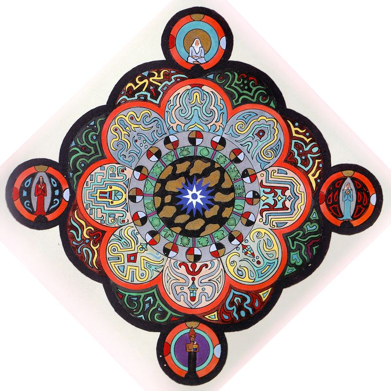
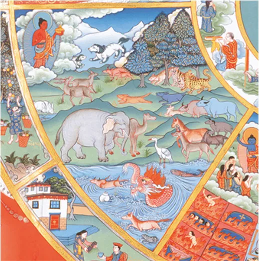
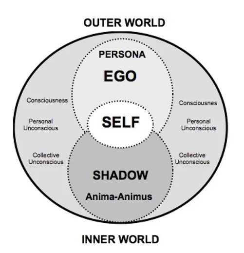

Individuation is the central theme of Jungian psychology.
Within this process, an individual goes from being a fragmented piece to a unique whole. Individuation can be both challenging and exhilarating, treacherous and liberating.

The path of Individuation
The Shadow
The Anima-Animus

The Animal Realm

The Self
"I am not what happened to me, I am what I choose to become."
-Carl Jung
Archetypes regulate all essential human activities. The most important of all is the Self, which is the archetype of the Center of the psychic person, his/her totality or wholeness.